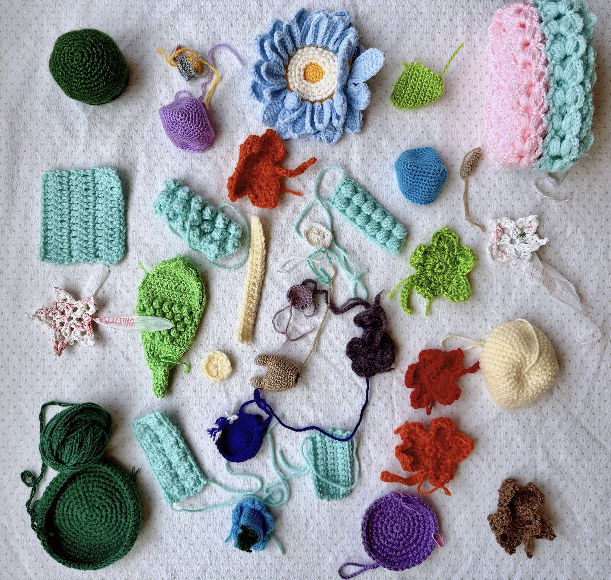
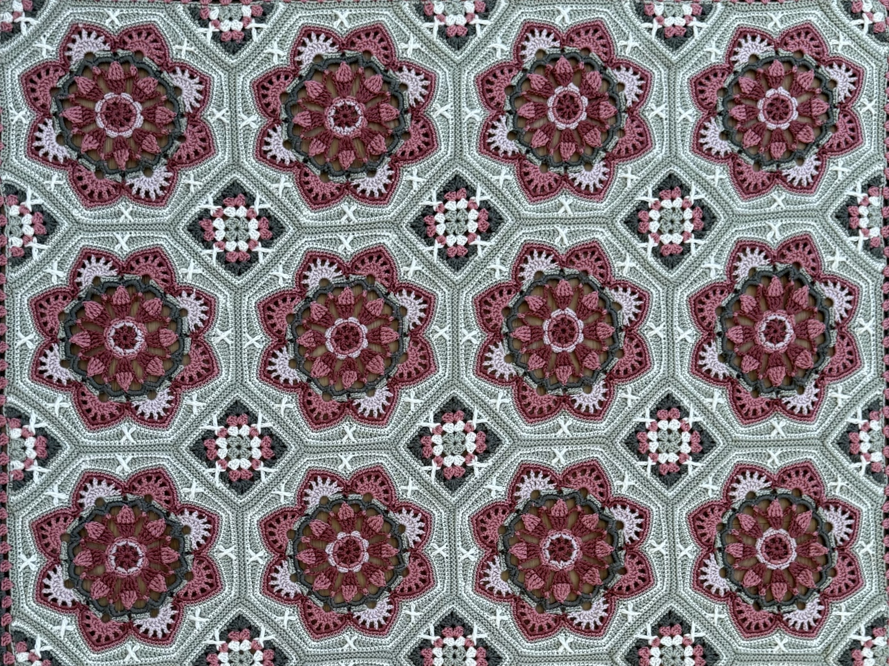
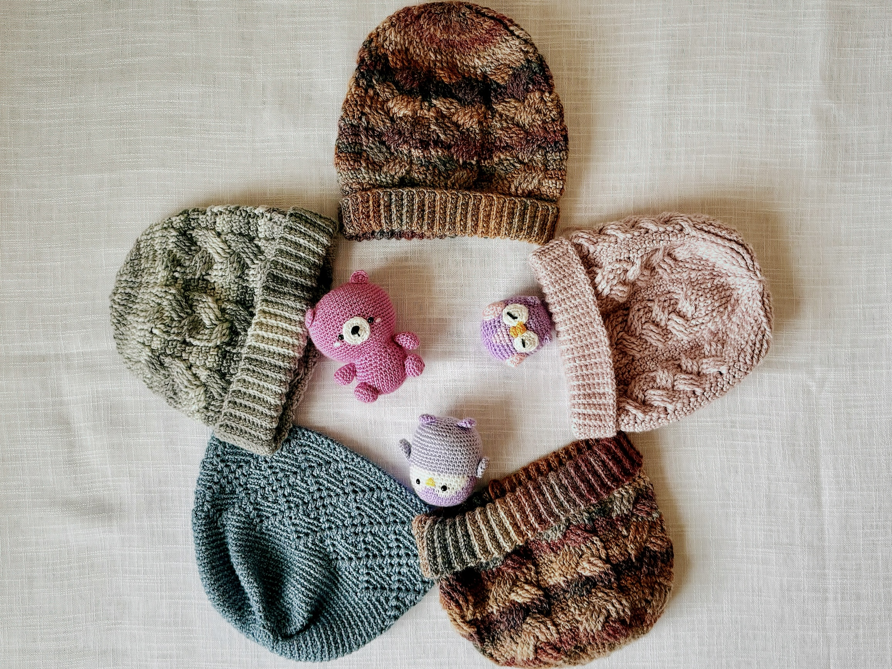
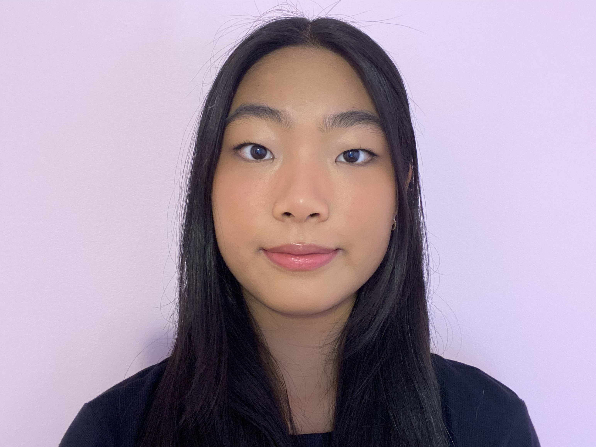
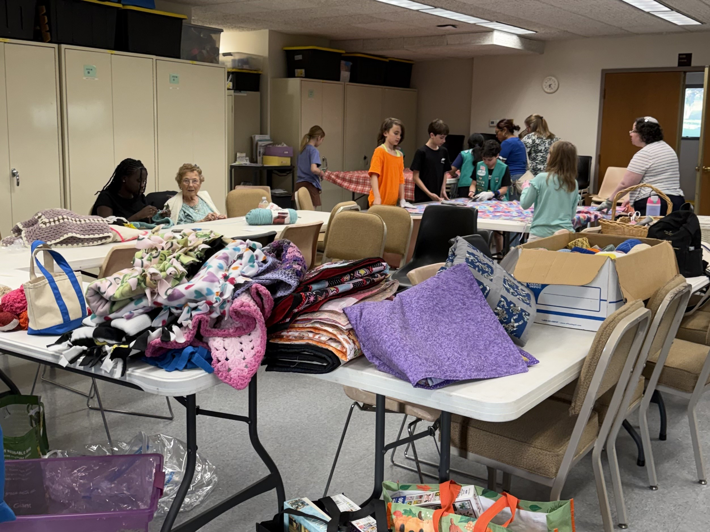

From learning the craft to sharing comfort
Three moments that show how creativity becomes handmade care for the community.

Learning the craft
Every handmade item begins with patience, creativity, and countless stitches.

Creating with purpose
Blankets, scarves, heart pillows, and comfort pieces are made to bring warmth and encouragement.

Sharing comfort
Finished pieces are donated through community partners to reach people who need extra care.

Meet Ciara Feng
Stitches for Care began as one student’s way to turn crochet into comfort. Ciara Feng, a student in the STEM program at Montgomery Blair High School, founded the initiative to combine creativity, leadership, and community service.
Her crochet work has been recognized at county and state fair competitions, reflecting the craftsmanship and care behind each handmade piece.
Handmade care reaches the community
Together with the Maryland Association for Family & Community Education, handmade blankets, scarves, heart pillows, and comfort items are distributed through trusted community networks serving individuals and families in Maryland.

Have yarn, time, or kindness to share?
Volunteer, donate supplies, or partner with us to help handmade comfort items reach people in need.
Get Involved